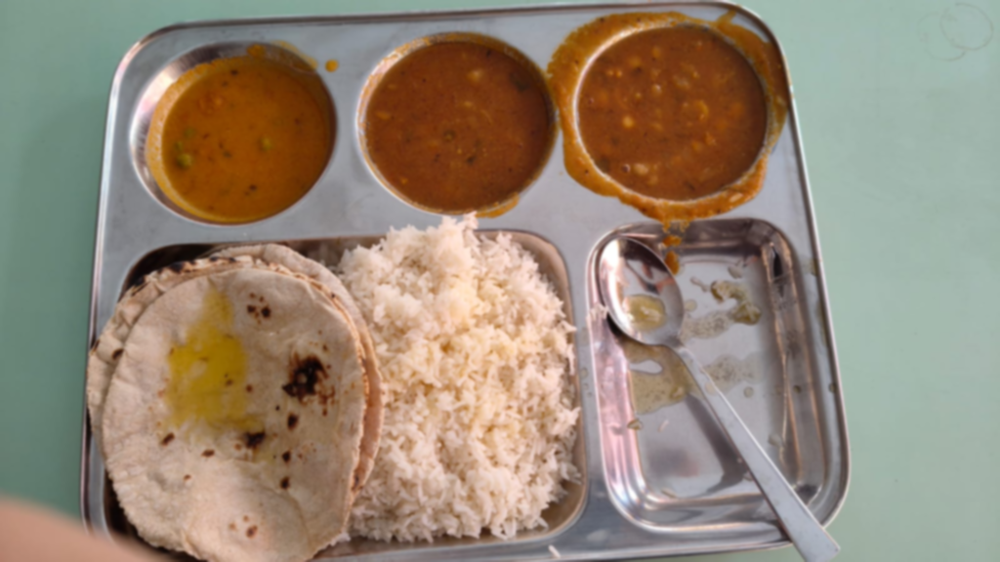
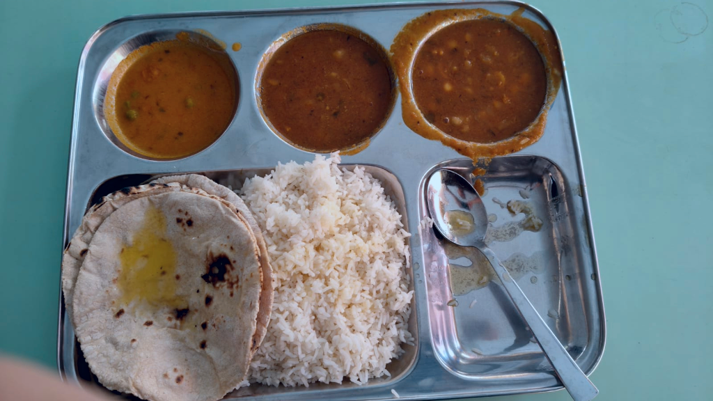
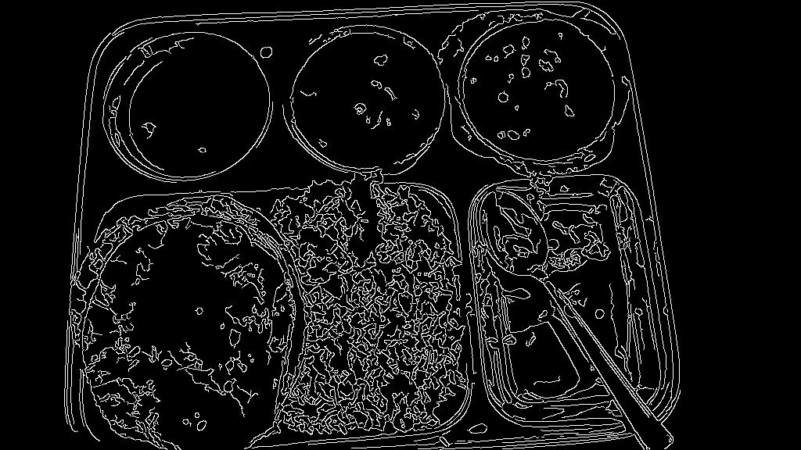
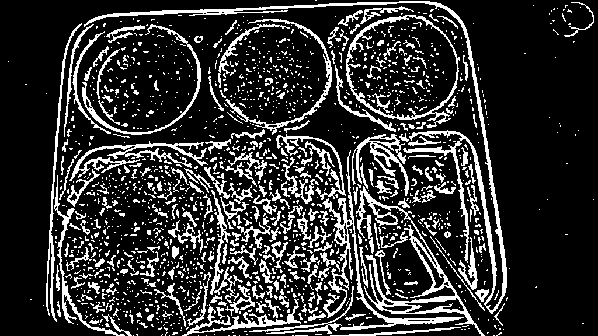
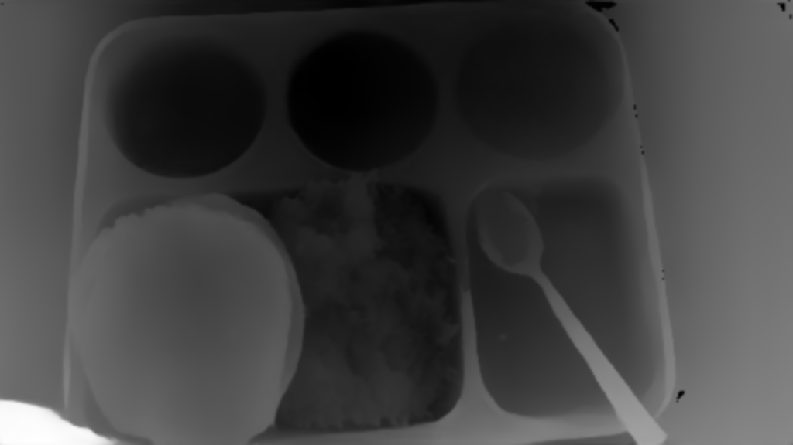
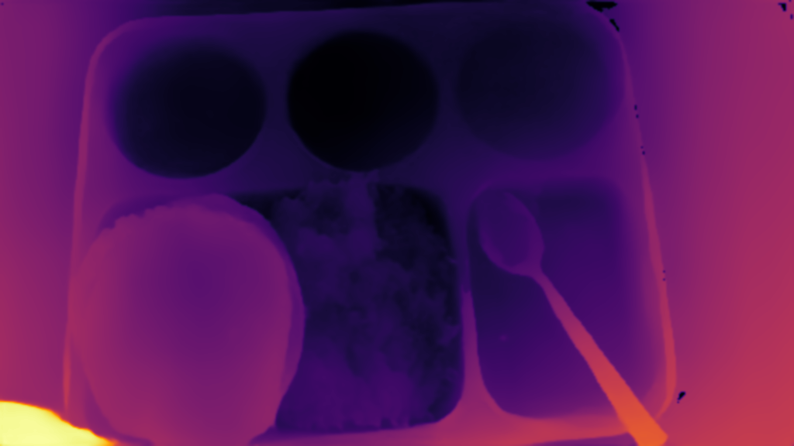
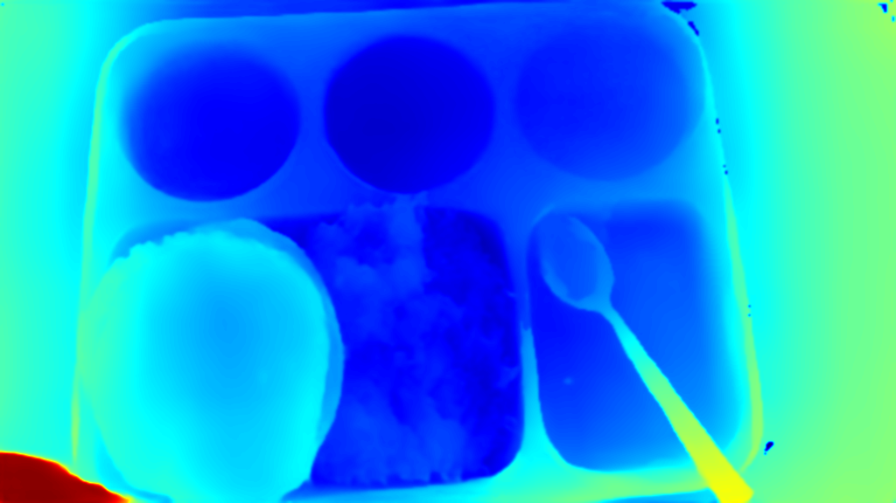
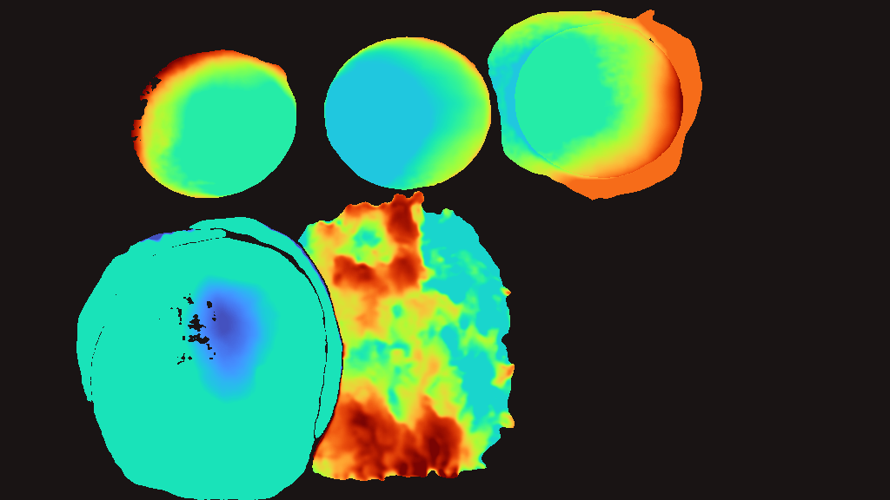
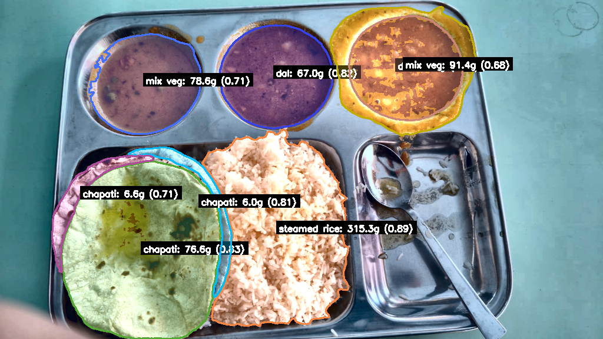

{
"resolution": "1600x900",
"channels": 3,
"dtype": "uint8",
"expected_items": [
"chapati",
"green salad",
"mix veg",
"steamed rice",
"cake",
"chutney",
"dal"
],
"plate_profile": null,
"debug": true
}









[]
{
"item_id": "steamed rice_1",
"area_pixels": 61293,
"estimated_height_cm": 3.316,
"volume_estimate_ml": 287.7,
"density": 1.096,
"mass_g": 315.3,
"class_label": "steamed rice",
"class_confidence": 0.9365,
"depth_stability": 1.0,
"scale_confidence": 0.7,
"composite_confidence": 0.8852,
"prior_applied": true
}{
"item_id": "chapati_2",
"area_pixels": 66528,
"estimated_height_cm": 1.755,
"volume_estimate_ml": 96.9,
"density": 0.79,
"mass_g": 76.6,
"class_label": "chapati",
"class_confidence": 0.831,
"depth_stability": 1.0,
"scale_confidence": 0.7,
"composite_confidence": 0.8338,
"prior_applied": true
}{
"item_id": "dal_3",
"area_pixels": 26519,
"estimated_height_cm": 1.931,
"volume_estimate_ml": 61.4,
"density": 1.091,
"mass_g": 67.0,
"class_label": "dal",
"class_confidence": 0.8027,
"depth_stability": 1.0,
"scale_confidence": 0.7,
"composite_confidence": 0.8195,
"prior_applied": true
}{
"item_id": "chapati_4",
"area_pixels": 5196,
"estimated_height_cm": 1.803,
"volume_estimate_ml": 7.6,
"density": 0.799,
"mass_g": 6.0,
"class_label": "chapati",
"class_confidence": 0.7805,
"depth_stability": 1.0,
"scale_confidence": 0.7,
"composite_confidence": 0.8081,
"prior_applied": true
}{
"item_id": "chapati_5",
"area_pixels": 5757,
"estimated_height_cm": 1.826,
"volume_estimate_ml": 8.4,
"density": 0.79,
"mass_g": 6.6,
"class_label": "chapati",
"class_confidence": 0.6035,
"depth_stability": 1.0,
"scale_confidence": 0.7,
"composite_confidence": 0.7106,
"prior_applied": true
}{
"item_id": "dal_6",
"area_pixels": 23269,
"estimated_height_cm": 2.915,
"volume_estimate_ml": 63.9,
"density": 1.073,
"mass_g": 68.6,
"class_label": "dal",
"class_confidence": 0.4981,
"depth_stability": 1.0,
"scale_confidence": 0.7,
"composite_confidence": 0.6456,
"prior_applied": true
}{
"item_id": "mix veg_7",
"area_pixels": 25096,
"estimated_height_cm": 2.547,
"volume_estimate_ml": 87.3,
"density": 0.9,
"mass_g": 78.6,
"class_label": "mix veg",
"class_confidence": 0.6013,
"depth_stability": 1.0,
"scale_confidence": 0.7,
"composite_confidence": 0.7093,
"prior_applied": true
}{
"item_id": "mix veg_8",
"area_pixels": 27099,
"estimated_height_cm": 2.743,
"volume_estimate_ml": 101.5,
"density": 0.9,
"mass_g": 91.4,
"class_label": "mix veg",
"class_confidence": 0.5504,
"depth_stability": 1.0,
"scale_confidence": 0.7,
"composite_confidence": 0.6786,
"prior_applied": true
}

{
"food_items": [
{
"name": "steamed rice",
"volume_ml": 287.7,
"mass_g": 315.3,
"calories": 324.7,
"protein": 6.3,
"carbs": 70.9,
"fat": 0.0,
"confidence": 0.8852,
"class_label": "steamed rice",
"class_confidence": 0.9365,
"top_k": [
{
"label": "steamed rice",
"confidence": 0.9365,
"raw_similarity": 0.9365
}
],
"identification_status": "recognized",
"menu_match": true,
"matched_menu_item": "steamed rice",
"identification_confidence": 0.9365,
"segmentation_confidence": 0.9365,
"association_confidence": 1.0,
"menu_match_confidence": 1.0,
"depth_confidence": 1.0,
"scale_confidence": 0.7,
"food_name": "steamed rice",
"instance_count": 1
},
{
"name": "chapati",
"volume_ml": 112.9,
"mass_g": 89.2,
"calories": 232.0,
"protein": 6.7,
"carbs": 44.6,
"fat": 2.3,
"confidence": 0.8338,
"class_label": "chapati",
"class_confidence": 0.831,
"top_k": [
{
"label": "chapati",
"confidence": 0.831,
"raw_similarity": 0.831
}
],
"identification_status": "recognized",
"menu_match": true,
"matched_menu_item": "chapati",
"identification_confidence": 0.831,
"segmentation_confidence": 0.831,
"association_confidence": 1.0,
"menu_match_confidence": 1.0,
"depth_confidence": 1.0,
"scale_confidence": 0.7,
"food_name": "chapati",
"instance_count": 3
},
{
"name": "dal",
"volume_ml": 125.3,
"mass_g": 135.6,
"calories": 180.8,
"protein": 9.9,
"carbs": 27.1,
"fat": 3.6,
"confidence": 0.8195,
"class_label": "dal",
"class_confidence": 0.8027,
"top_k": [
{
"label": "dal",
"confidence": 0.8027,
"raw_similarity": 0.8027
[
{
"step": "Input",
"message": "Original image saved",
"params": {
"resolution": "1600x900"
},
"elapsed_s": 0.1089,
"input_file": null,
"output_file": "original.png",
"timestamp": "2026-11-12T12:35:58.206729"
},
{
"step": "Pipeline",
"message": "Step 1 — Preprocessing & Perspective Warp",
"params": {},
"elapsed_s": null,
"input_file": null,
"output_file": null,
"timestamp": "2026-11-12T12:35:58.206729"
},
{
"step": "Quality Gate",
"message": "PASS",
"params": {
"blur_score": 132.45,
"tilt_deg": 7.5
},
"elapsed_s": null,
"input_file": null,
"output_file": null,
"timestamp": "2026-11-12T12:35:58.318892"
},
{
"step": "Preprocessing",
"message": "Resize applied",
"params": {
"original": "1600x900",
"target_long_edge": 1024,
"scale": 0.64
},
"elapsed_s": 0.0022,
"input_file": null,
"output_file": "01_resized.png",
"timestamp": "2026-11-12T12:35:58.373134"
},
{
"step": "Preprocessing",
"message": "Gaussian blur applied",
"params": {
"kernel": 5
},
"elapsed_s": 0.0017,
"input_file": null,
"output_file": "02_denoised.png",
"timestamp": "2026-11-12T12:35:58.429944"
},
{
"step": "Preprocessing",
"message": "LAB color normalization applied",
"params": {},
"elapsed_s": 0.2914,
"input_file": null,
"output_file": "03_color_normalized.png",
"timestamp": "2026-11-12T12:35:58.773566"
},
{
"step": "Preprocessing",
"message": "CLAHE contrast enhancement applied",
"params": {
"clip_limit": 2.0,
"tile_grid": "8x8"
},
"elapsed_s": 0.0115,
"input_file": null,
"output_file": "04_contrast_enhanced.png",
"timestamp": "2026-11-12T12:35:58.840089"
},
{
"step": "Preprocessing",
"message": "Canny edge detection",
"params": {
"low": 50,
"high": 150
},
"elapsed_s": 0.0| Step | Message | Params | Time |
|---|---|---|---|
| Input | Original image saved | {"resolution": "1600x900"} | 0.1089s |
| Pipeline | Step 1 — Preprocessing & Perspective Warp | — | — |
| Quality Gate | PASS | {"blur_score": 132.45, "tilt_deg": 7.5} | — |
| Preprocessing | Resize applied | {"original": "1600x900", "target_long_edge": 1024, "scale": 0.64} | 0.0022s |
| Preprocessing | Gaussian blur applied | {"kernel": 5} | 0.0017s |
| Preprocessing | LAB color normalization applied | — | 0.2914s |
| Preprocessing | CLAHE contrast enhancement applied | {"clip_limit": 2.0, "tile_grid": "8x8"} | 0.0115s |
| Preprocessing | Canny edge detection | {"low": 50, "high": 150} | 0.0183s |
| Preprocessing | Warp skipped (no 4-pt contour) | {"warped": false} | — |
| Preprocessing | Complete | {"output_size": "1024x576"} | 0.7208s |
| Pipeline | Step 2 — Compartments & Scale | — | — |
| Compartment Detection | Detected 0 compartments | {"min_area_frac": 0.02, "max_area_frac": 0.9, "compartment_count": 0} | 0.0171s |
| Scale Calibration | Fallback to bbox-based calibration | {"cm_per_pixel": 0.04081, "method": "bbox"} | — |
| Compartment Detection | Scale computed | {"cm_per_pixel": 0.04081, "pixel_area_cm2": 0.00166536, "compartments": 0, "scale_confidence": 0.7} | 0.1044s |
| Pipeline | Step 3 — Depth Estimation | — | — |
| Depth Estimation | Depth Anything depth map computed (smoothed) | {"device": "cuda", "is_metric": true, "shape": [576, 1024], "min": -104.118, "max": -33.894} | 30.7752s |
| Depth Normalization | Surface normal plane subtracted from depth | {"baseline": -87.728, "fitted_plane": true, "is_metric": true} | 0.0879s |
| Depth Metric [cm] | Metric depth height in cm directly computed | {"cm_per_pixel": 0.04081, "min_cm": 0.0, "max_cm": 15.0, "mean_cm": 4.32} | 0.0026s |
| Depth Estimation | Complete | — | 30.9720s |
| Pipeline | Step 4–6 — SAM 3 Food Identification & Segmentation | — | — |
| SAM3 | Identified 8 food items (8 recognized, 0 unlisted, 0 uncertain) | — | 53.3583s |
| Pipeline | Step 7 — Volume & Mass Estimation | — | — |
| Volume Estimation | Computed mass for 8 items | {"total_items": 8} | 0.0326s |
| Pipeline | ✅ Pipeline complete | {"total_food_items": 8, "avg_confidence": 0.7613, "scale_method": "bbox"} | 85.4167s |